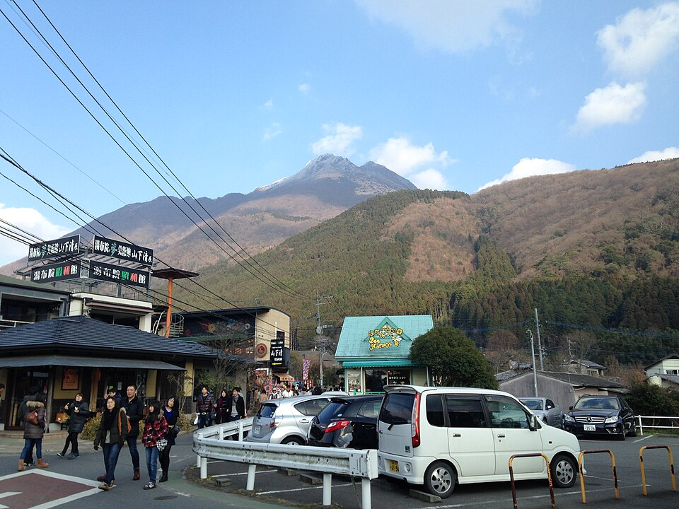

- 15:2012/6(일) 인천 → 후쿠오카 · 7C1405제주항공 · 16:50 도착 (1시간 30분)
- 17:30후쿠오카공항 국제선 → 하카타역입국 후 국제선 1층에서 니시테쓰 직행버스, 약 20분. 짐 들고 갈아탈 필요가 없어요
- 체크인하카타역 근처 호텔다음 날 아침 열차를 역 바로 앞에서 타요
- 19:00저녁 · 스시 또는 모츠나베일요일이라 스시 타가미는 쉬어요. 역 안 회전초밥(주문하면 바로 쥐어줌)이나 오스시마치, 따뜻한 모츠나베
- 20:30선택백화점 지하 식품관 구경 · 명란젓여행 첫날은 일찍 숙소로
TRIPBOOK.
2026-11-27 업데이트

D-?12/6 출발
엄마랑 후쿠오카 · 히타 · 유후인 · 4박 5일
엄마랑 뜨끈하게,
일본 온천 여행
12/6(일) ~ 12/10(목)유후인 료칸 2박엄마 여권 일본 OK
🇯🇵 JPY → 🇰🇷 KRW 100엔 ≈ 845원
한국 원화 환산-

① 후쿠오카 · 히타 · 유후인12/6(일)~10(목) 4박 5일 · 하카타 1박 + 유후인 료칸 2박 + 하카타 1박
항공 1인 (확정)30.2만원
숙소 이동1번
1인 예산100만~125만
1인 예산 = 항공 약 30만 + 캐리어 1개 짐값 + 유후인 료칸 2박 23만~40만 + 하카타 호텔 2박 15만~20만(방만) + 특급 열차 약 10만 + 식비·쇼핑 20만 안팎
✈️ 항공편 · 인천 ↔ 후쿠오카직항 · 1인 편도 합계 · 11/28 기준
12/6(일) ~ 12/10(목) · 4박 5일⭐ 확정 일정
가는 편15:20→16:507C1405 제주항공12/6 일₩151,000
오는 편10:00→11:30RS434 에어서울12/10 목₩150,782
1인 ₩301,782 · 2인 ₩603,564
- 🧳 짐 계획: 큰 캐리어 1개만 부치고 기내용 가방은 각자 1개. 짐값은 한 사람 것만 내요. 오는 편 에어서울 15kg 사전구매 ₩40,000, 가는 편 제주항공 베이직 15kg ₩40,000 → 2인 항공 + 짐 합계 약 ₩683,564.
- 짐값은 예약할 때나 출발 전에 앱에서 미리 사요. 공항 카운터에서 사면 더 비싸요(제주항공 공항 ₩75,000). 금액은 결제 화면에서 한 번 더 확인.
- 기내용 가방엔 100ml 넘는 액체(명란 소스·사케·유자후추) 못 넣어요. 돌아올 때 큰 캐리어 15kg 넘지 않게.
- 대안: 쇼핑이 많아지면 오는 편 대한항공 10:30(₩192,552, 1인 짐 포함).
- 마지막 날 7시 반쯤 호텔에서 나와야 해요. 아침은 공항에서.
가격은 매일 아침 다시 확인해서 ✈️ 항공 가격 탭에 올려요. 결제 전에 항공사 앱에서도 한 번 더 확인하세요.
이 코스가 좋은 이유
- 비행 1시간 반, 일본에서 온천 마을이 가장 많이 모인 곳
- 유후인 료칸에 2박 해서 짐 풀고 푹 쉬어요. 가이세키도 두 번
- 가는 길 중간 히타에서 에도 시대 옛 거리 구경과 쇼핑
일정 · 느긋한 4박 5일
하루에 한 곳만, 오후엔 쉬는 리듬으로 짰어요.
- 09:30하카타 → 히타 특급 약 1시간 16분큰 캐리어는 하카타 호텔에 맡기고(12/9에 다시 묵어요) 기내용 가방만 들고 출발. 유후인 가는 같은 노선의 중간 역이라 내렸다가 다시 타면 돼요. 가방은 히타역 코인로커에
- 11:00마메다마치 옛 거리 산책평지라 걷기 편해요. 간장 가게, 사케 양조장, 히나 인형 전시관
- 12:30점심 · 히타마부시 (장어덮밥)센야는 매일 10:30~16:30, 점심때 줄 서요. 월요일엔 BOWL·카제토네가 쉬어서 대안은 소노다(히타식 야키소바) 또는 토마리기(정식)
- 13:30카페 · 쇼핑운하가 보이는 알래스칸 카페의 곰돌이 말차라테(월요일은 영업) 또는 레트로 다방 무기야 카페 → 간장·나무 공예 쇼핑
- 15:30히타 → 유후인 · 료칸 체크인유카타로 갈아입고 노천탕 → 가이세키 저녁 → 일찍 자기
- 07:00아침탕 · 료칸 조식
- 09:00긴린코 호수 산책추운 아침엔 호수에 물안개가 피어요
- 10:00호숫가 카페2층 호수뷰 카페 라뤼슈(화요일 영업) 또는 호수 옆 나무집 카페 텐조사지키
- 11:30유노쓰보 거리 · 점심 우동지영 추천 코하루 우동(점심만, 줄 생길 수 있어요) → 롤케이크, 고로케, 링곤 쿠키(화요일 영업), 잡화
- 14:00료칸으로 돌아와 낮잠 · 온천이날은 아무것도 안 하는 게 일정이에요
- 18:00료칸 2박째 · 가이세키
- 대신선택벳푸 지옥순례 반나절엄마가 쌩쌩하시면 오전에 다녀와도 돼요
- 아침아침탕 · 조식 · 느긋하게 체크아웃
- 11:00유후인 → 하카타 특급 유후약 2시간 10분. 창밖 산 풍경. 지정석 미리 예약. 하카타역에서 내려 호텔에 짐 맡기기
- 14:00늦은 점심 · 이치무진 치킨난반예슬 추천. 줄이 길면 텐진 효탄 회전초밥도 좋아요
- 15:30텐진·하카타 쇼핑 · 면세백화점, 드럭스토어, 과자 선물. 한큐 면세 카운터는 줄이 생길 수 있어요
- 저녁마지막 저녁 · 스시 타가미(예약) 또는 빈초·카구라타가미는 수요일 영업. 모츠쇼는 수요일 휴무예요
- 07:30호텔 체크아웃 · 국제선 직행버스하카타역 지쿠시 출구 쪽 정류장에서 국제선 터미널까지 약 20분. 호텔 조식은 건너뛰고 공항에서
- 08:00후쿠오카공항 국제선 도착 · 아침출발 2시간 전. 수속 후 면세점에서 명란·과자 마지막 쇼핑
- 10:00후쿠오카 → 인천 · RS434에어서울 · 11:30 도착 · 큰 캐리어 1개만 부쳐요(사전구매 15kg)
가이세키 료칸 · 유후인
12/7(월)~9(수) 2박 · 2인 1실 · 저녁·아침 포함 · 1박 40만원 이하 (쟈란·부킹닷컴 중 싼 쪽, 11/28 조회)
유후인은 icotto 1인 참고가, 히타는 쟈란 표시가. 날짜·플랜마다 다르고 방에서 먹는지는 플랜마다 확인해야 해요.
스시 · 맛집 · 카페
쇼핑
✈️ 항공 가격
매일 아침 Google 항공권에서 직항 가격을 다시 확인해 여기에 올려요. 조건은 가는 날 16:30 이전 출발, 오는 날 10:00~18:00 출발이에요. 1인 편도 가격이에요. 순위는 오는 편 짐 15kg 포함 가격 기준(에어서울 특가 +₩40,000).
불러오는 중…
가는 편
| 편명 | 시간 | 오늘 운임만 | 짐 15kg 1개 포함 | 어제 대비 |
|---|
오는 편
| 편명 | 시간 | 오늘 운임만 | 짐 15kg 1개 포함 | 어제 대비 |
|---|
다른 날짜로 가면? (12/5~10 사이 3·4박)
| 날짜 | 가장 싼 편 (가는 / 오는 · 짐 포함 기준) | 1인 합계 짐 15kg 포함 |
|---|
확정 조합 가격 흐름
🏨 숙소
67년생 엄마랑 가기 편한 곳 위주로 골랐어요. 한국인 후기가 많은 곳, 방이나 개별실에서 저녁 먹는 곳, 전세탕·객실 노천탕이 있는 곳.
엄마랑 료칸 고를 때 볼 것
- 탕 · 객실 노천탕이나 무료 가족 전세탕(가시키리)이 있으면 대욕장이 부담스러워도 OK
- 저녁 · 방에서 먹는 헤야쇼쿠(部屋食)나 개별 식사실
- 잠자리 · 바닥 이불이 힘드시면 침대 있는 화양실(和洋室)
- 이동 · 역 송영이 있는지, 엘리베이터가 있는지, 계단이 많은지
- 연박 · 같은 료칸에 2박이면 짐 풀고 푹 쉬어요. 둘째 날 가이세키 메뉴를 바꿔주는 곳이 많아요
1박 2인 40만원 이하 · 저녁·아침 포함만 남겼어요. 12/7~9 2박에 실제로 남은 방을 쟈란과 부킹닷컴에서 같이 찾고, 두 곳 다 있으면 싼 쪽을 크게 적었어요(11/28 조회). 아고다는 같은 날짜 유후인 숙소가 78% 마감이라 2식 포함 방이 거의 안 떠서 뺐어요.
카드를 누르면 사이트별 가격·침대·위치가 나와요. 100엔=844원 기준(쟈란 엔 가격 환산). 하카타 저녁은 밖에서 먹어요.
유후인 료칸 · 2박
12/7(월)~9(수)2식 포함
날짜를 12/7~9로 옮기면서 하치스노이토·시키사이·고토부키는 이 날짜에 2식 방이 없어 뺐고, 우마루 료칸·센도·야마나미를 새로 넣었어요. 사이가쿠칸·무소엔·야도야는 이 기간 내내 만실이에요.
벳푸로 바꾸면 · 2박
12/7(월)~9(수)2식 포함
- 같은 가격대에 평점 높은 큰 숙소·침대 방이 훨씬 많아요. 바다 전망도 있어요.
- 히타 → 벳푸는 특급 유후로 오이타까지 간 뒤 갈아타야 해서 유후인보다 1시간쯤 더 걸려요. 유후인은 버스로 50분~1시간 당일치기.
- 돌아오는 12/9는 벳푸 → 하카타 특급 소닉(약 2시간). 일정·교통 탭은 아직 유후인 기준이라, 벳푸로 정하면 같이 바꿔 드릴게요.
하카타 호텔 · 12/6 · 12/9
2인 1실 · 방만1박 20만원 이하
조식 없이 위치 좋고 깔끔한 곳으로 골랐어요. 부킹닷컴 평점 8점 이상, 세금 포함 2인 1박 20만원 이하(11/28 조회). 12/6·12/9를 같은 호텔(도큐 스테이·비아 인)로 잡으면 큰 캐리어를 12/7~9 동안 맡겨 두고 료칸엔 기내용 가방만 들고 갈 수 있어요. 예약 후 호텔에 짐 보관 되는지 메일로 확인하세요.
💳 우리 WON트래블 비교
사파 때처럼 같은 방을 WON트래블이 더 싸게 파는지 비교하려면 앱 로그인이 필요해서 여기서는 못 봐요. 날짜와 후보 2~3곳이 정해지면 WON트래블 앱에서 같은 날짜로 검색한 화면을 캡처해 보내주세요. 아고다·Google 가격과 나란히 표로 넣어 드릴게요.
🚆 교통
교통패스는 안 사도 돼요. 특급 열차 세 구간만 표를 사면 되고, 나머지는 버스·지하철 몇 번이에요.
1인 교통비 합계 ¥13,340 (지정석 기준) · 2인 ¥26,680
택시·벳푸 버스는 빼고 계산했어요.
택시·벳푸 버스는 빼고 계산했어요.
날짜별 이동
12/6(일) 공항 → 하카타D1 · 7C1405 16:50 도착
17:30쯤
국제선 터미널 → 하카타역니시테쓰 직행버스, 국제선 1층 6·7번 승강장. 하카타역 지쿠시 출구 쪽에 내려요. 짐 들고 갈아탈 필요가 없어 제일 편해요.
¥400저녁
호텔 → 저녁 식당하카타역 근처 호텔이면 걸어서. 나카스·기온 쪽은 지하철 1~2정거장.
0~¥21012/7(월) 하카타 → 히타 → 유후인D2
09:30쯤
하카타 → 히타 · 특급 유후약 1시간 30분. 지정석 추천(평일 오전이라 자유석도 대개 앉지만 엄마랑이면 지정석).
¥3,66011:00쯤
히타역 → 마메다마치역 북쪽으로 약 1km, 걸어서 15분쯤 평지. 엄마가 힘들면 역 앞 택시로 5분.
0~택시15:30쯤
히타 → 유후인 · 특급 유후약 1시간. 큰 짐은 히타역 코인로커에 넣어 두고 다녀요.
¥2,83016:30쯤
유후인역 → 료칸료칸 송영(픽업)이 있는지 예약할 때 확인. 없으면 역 앞 택시(대부분 5~10분 거리). 유노히라 쪽 료칸(다이키치·우마루)은 유후인역에서 차로 20~30분이라 송영 필수.
0~택시12/8(화) 유후인에서 쉬는 날D3
종일
걸어서 다녀요유후인역 → 유노쓰보 거리 → 긴린코가 약 1.5km 한 줄이에요. 료칸이 멀면 료칸에 역·긴린코까지 태워다 주는지 물어보세요.
0선택
벳푸 지옥순례 다녀오기유후인역 앞에서 가메노이 버스 36번, 50분~1시간. 탈 때 정리권 뽑고 내릴 때 현금. 정확한 요금은 버스 안 요금표로.
왕복 수천엔12/9(수) 유후인 → 하카타D4
11:00쯤
유후인 → 하카타 · 특급 유후약 2시간 10분. 하카타역에서 내려 호텔에 짐 맡기기.
¥5,630오후
하카타 ↔ 텐진·기온 지하철하카타역 → 기온·나카스카와바타·텐진미나미 모두 ¥210. 교통카드(스이카·하야카켄 등)나 신용카드 터치로도 돼요.
¥210×212/10(목) 하카타 → 공항D5 · RS434 10:00
07:30
호텔 출발 → 국제선 직행버스하카타역 지쿠시 출구 쪽 정류장에서 국제선 터미널까지 약 20분. 8시쯤 도착 → 출발 2시간 전.
¥400대안
지하철 + 무료 셔틀지하철 하카타 → 공항(국내선) ¥260, 거기서 국제선 무료 셔틀(약 10분). 공항이 셔틀 혼잡을 공지하고 있어서 짐 많은 날은 직행버스가 나아요.
¥2601인 합계 (택시 빼고)¥13,340
특급 유후 요금 (1인)
| 구간 | 자유석 | 지정석 | 날짜 |
|---|---|---|---|
| 하카타 → 히타 | ¥3,130 | ¥3,660 | 12/7 |
| 히타 → 유후인 | ¥2,300 | ¥2,830 | 12/7 |
| 유후인 → 하카타 | ¥5,100 | ¥5,630 | 12/9 |
| 합계 | ¥10,530 | ¥12,120 |
지정석은 시기에 따라 −¥200(한산기) / +¥200(성수기) / +¥400(최성수기)로 조금 달라져요. 히타에서 내렸다 다시 타면 표가 둘로 나뉘어서, 하카타→유후인 한 번에 사는 것보다 조금 비싸요.
북큐슈 레일패스, 살까?
표 따로 사기 (지정석)¥12,120
북큐슈 레일패스 3일¥15,000
이번 일정은 특급을 타는 날이 12/7, 12/9 이틀뿐이라 패스가 ¥2,880 더 비싸요. 5일권(¥17,000)은 더 손해예요. 벳푸까지 기차로 왕복한다면 그때 다시 계산해 볼게요.
표 사는 법
- JR큐슈 인터넷 열차 예약(한국어 있음)에서 날짜·구간·지정석을 고르고 카드 결제. 보통 한 달 전부터 예약할 수 있어요.
- 당일 하카타역 지정석 발권기에 예약 번호·카드를 넣고 종이 표를 받아요. 히타→유후인, 유후인→하카타 표도 같이 한 번에 뽑을 수 있어요.
- 역 창구(미도리노 마도구치)에서 사도 돼요. 메모를 보여주면 쉬워요: 「特急ゆふ 指定席 大人2枚」
유후인노모리(관광열차)는 인기라 금방 차요. 우리 시간대엔 일반 특급 유후로 계획했어요.
공항 ↔ 하카타 3가지
| 방법 | 시간 | 1인 |
|---|---|---|
| 니시테쓰 직행버스 ⭐국제선 6·7번 승강장 · 하카타역 지쿠시 출구 | 약 20분 | ¥400 |
| HEARTS 버스국제선 11번 승강장 | 약 20분 | ¥600 |
| 무료 셔틀 + 지하철국제선 5번 승강장 → 국내선역 → 지하철 2정거장 | 약 25분 | ¥260 |
| 택시2명이 짐 많을 때 | 약 15분 | 미터 |
출처: JR큐슈 특급 유후 운임표, JR큐슈 레일패스 안내, 후쿠오카공항 교통 안내, 후쿠오카시 지하철 운임 (2026-11 조회).
🍣 먹거리
우리가 그 동네에 있는 날짜에 맞춰 휴무를 표시했어요. 눌러서 자세히 보기, 지도 번호는 목록 번호와 같아요.
👭 예슬·연하·지영 추천 맛집은 목록 맨 위 분홍 표시예요. 예슬 지도 목록 30곳 중 우리 동선에 맞는 곳을 다 넣었어요.
예슬 한마디: 미즈타키(닭백숙)는 "돈 아까워" · 텐진 지하상가는 굳이 안 가도 됨
12/6(일) 저녁 → 오스시마치·우오덴·오오야마 본점 (타가미는 일요일 휴무) · 12/8(화) 점심 → 코하루 우동 · 12/9(수) 점심 → 이치무진 치킨난반, 저녁 → 스시 타가미(예약) 또는 히츠마부시 빈초 · 카구라 스키야키
예슬 한마디: 미즈타키(닭백숙)는 "돈 아까워" · 텐진 지하상가는 굳이 안 가도 됨
12/6(일) 저녁 → 오스시마치·우오덴·오오야마 본점 (타가미는 일요일 휴무) · 12/8(화) 점심 → 코하루 우동 · 12/9(수) 점심 → 이치무진 치킨난반, 저녁 → 스시 타가미(예약) 또는 히츠마부시 빈초 · 카구라 스키야키
저녁은 어디서? 12/7·12/8 저녁은 료칸 가이세키. 밖에서 먹는 저녁은 12/6(일), 12/9(수) 두 번이에요. 일요일엔 타가미가 쉬어서 12/6은 모츠나베나 오스시마치, 12/9에 스시 타가미나 빈초. 모츠쇼는 수요일 휴무예요.
⛩️ 볼거리
걷는 거리가 짧은 곳 위주예요. 지도 번호는 목록 번호와 같아요.
🛍️ 쇼핑
무거운 건 마지막 날 하카타에서. 히타 간장·유후인 롤케이크는 그 동네에서만 사요.
11월부터 면세가 바뀌었어요
가게에서 세금 포함 가격으로 결제하고, 출국할 때 공항에서 돌려받는 방식이에요.
가게에서 세금 포함 가격으로 결제하고, 출국할 때 공항에서 돌려받는 방식이에요.
- 한 가게에서 하루 세전 ¥5,000 이상 사면 대상. 계산할 때 여권 보여주기.
- 출국 날 공항에서 짐 부치기 전에 세관 키오스크에 여권을 대고 산 물건을 확인받아요.
- 수출이 확인되면 결제한 카드로 세금이 돌아와요.
- 영수증 하나에 있는 물건 중 하나라도 빠지면 그 영수증 전체가 환급 안 돼요. 다 들고 가기.
- 일본에서 먹거나 쓴 물건은 환급 안 돼요.
- 예전 소모품 ¥50만 한도는 없어졌어요.
- 한큐 백화점 면세 카운터는 30분~1시간 줄이 생길 수 있어요. 12/9 오후에 여유 있게.
뭘 살까
- 명란젓 · 다시팩 · 하카타후쿠야(데이토스, 8:00~21:00), 쇼보안·가야노야 다시팩(데이토스 1층). 명란은 보냉 포장, 마지막 날 사기.
- 낱개 포장 과자 · 야메차 · 하카타한큐 백화점 지하. 조금씩 골라 담기 좋아요.
- 약 · 화장품 · 과자 · 하카타돈키호테 나카스점(24시간).
- 간장 · 폰즈 · 은어간장 · 히타하라지로자에몬(마메다마치점은 수·목 휴무, 우리 날짜 12/7 월요일 OK), 히나고텐 시음. 마루마타쇼유는 현지인이 사는 집, 평일만.
- 사케 · 히타쿤초 양조장에서 시음하고 고르기.
- 유자후추 · 롤케이크 · 쿠키 · 유후인유노쓰보 거리. B-speak 롤케이크(보냉팩), 링곤 쿠키(개별 포장, 수 휴무).
유튜브에서 많이 산 것 최근 1년 한국 영상 · 조회수 순
💊 드럭스토어 · 하카타역 걸어서 3분
- 파스동전파스는 한국인만 산대요. 일본 사람들이 쓰는 파스는 약사에게 물어보기.
- 오타이산 소화제 · 안약안약은 눈 피로용 로토 계열이 인기. 같은 성분 더 싼 제품도 있어요.
- 시세이도 선크림 · 피노 트리트먼트피노는 한국보다 싸요.
- 이노치노하하(命の母)여성 건강 영양제. 엄마랑 약사에게 상담하고 고르기.
- 트란시노 EX기미약. 약사가 있을 때만 팔아요.
종희비행기 「약사왈 그거 관광객만 사는 거예요」(88만) · 후쿠오카 오가드럭스토어 하카타구치점 촬영. 영상 기준 5,000엔 이상 면세, 1만엔당 500엔 쿠폰(가게 인스타).
🛒 돈키호테 · 둘 다 24시간
- 휴족시간종아리에 붙이는 쿨링 시트. 많이 걸은 날 밤 료칸·호텔에서.
- 아이봉 · 쿨링 안대눈 세정제와 눈 피로용 안대.
- 민티아 · 헤어밀크가볍고 싸서 선물용으로 조금씩.
10시엔 디붕 돈키호테 추천템(36만) · ILLIT 후쿠오카 돈키호테(343만) · 고소영 돈키호테 추천템(70만).
🎁 기념품 · 브랜드
- 가야노야 다시팩국물용 팩. 하카타역 데이토스 1층. 부모님 선물 1순위로 자주 나와요.
- 소금사이다 캔디 · 칼디칼디는 커피·소스·과자 수입 식품점.
- GU · 몽벨 · 스탠다드 프로덕트 · 우양산(Wpc)미나텐진(유니클로·GU·세리아), 하카타 버스터미널(다이소·스탠다드 프로덕트).
- 이모야 킨지로 고구마튀김텐진 지하상가, 10:00~20:00 연중무휴. 간식으로 먹고 선물용도 있어요.
타이거투어 쇼핑리스트 BEST14(70만) · 헤르미 후쿠오카 2박3일(70만) · 더들리 또갈집 18곳(189만).
약은 성분에 따라 한국 반입이 안 되는 것도 있어요. 살 때 "한국에 가져가도 되나요" 물어보기 (영상에서도 확인함).
간장·사케 같은 액체는 기내에 못 들고 타요. 공항 세관 확인을 받은 뒤 부치는 짐에 넣기.
어디서 살까
면세 제도 출처: 일본 관광청 「免税制度の見直し」, nippon.com (2026-11 조회).
✅ 준비
체크 표시는 이 휴대폰에만 저장돼요.